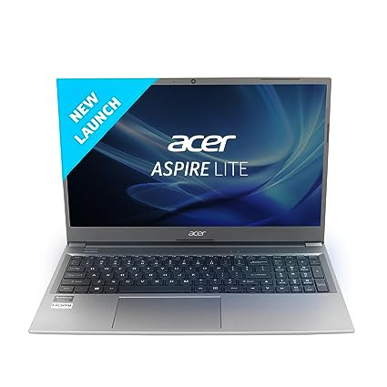
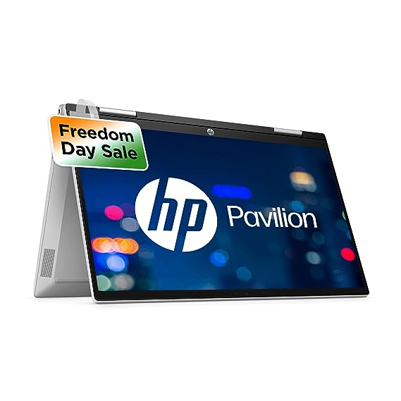
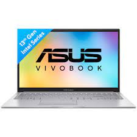

Unveiling the Best New Budget Laptops: A Comprehensive Guide
Introduction
In today's fast-paced digital world, having a reliable laptop is no longer a luxury but a necessity. Whether you're a student, a professional, or an aspiring content creator, finding a budget-friendly laptop that doesn't compromise on performance and features is essential. Fortunately, the market is teeming with options that offer an impressive blend of affordability and functionality. In this comprehensive guide, we'll delve into the realm of budget laptops and unveil some of the best new contenders that are sure to meet your computing needs without breaking the bank.
Defining Budget-Friendly Laptops
Before we dive into the list of the best budget laptops, let's establish what makes a laptop "budget-friendly." Essentially, a budget laptop strikes a balance between cost and performance. These laptops are designed to provide essential features and decent performance while keeping the price tag within reach for most consumers.
Key Considerations when Choosing a Budget Laptop
When shopping for a budget laptop, it's essential to consider a few crucial factors to ensure you're getting the best value for your money:
Performance: Look for laptops equipped with modern processors like Intel's Core series or AMD's Ryzen processors. Aim for at least 8GB of RAM for smooth multitasking and performance.
Storage:Opt for laptops with SSDs (Solid State Drives) instead of traditional HDDs (Hard Disk Drives). SSDs are faster, more reliable, and contribute significantly to overall system responsiveness.
Display:A Full HD (1920x1080) display is recommended for a sharp visual experience. Consider the display size based on your preference and portability needs.
Battery Life:A longer battery life is ideal, especially if you're frequently on the move. Look for laptops with at least 8 hours of battery life for everyday usage.
Build Quality:While budget laptops may not match premium devices in terms of build quality, look for laptops with sturdy construction and comfortable keyboard and trackpad.
Top Picks for Budget Laptops
Here are some of the best new budget laptops that offer excellent value for your investment:
Acer Aspire 5:

The Acer Aspire 5 combines affordability with performance. With a sleek design, an FHD display, and a variety of processor options, it's a versatile choice for both work and entertainment. purchase linkLenovo IdeaPad 3:

HP Pavilion x360:

If you're in search of a budget 2-in-1 laptop, the HP Pavilion x360 is worth considering. With a touchscreen display and convertible design, it's perfect for creative tasks and entertainment.purchase linkDell Inspiron 15:

ASUS VivoBook series:

ASUS's VivoBook lineup combines style and substance. These laptops often feature slim designs, FHD displays, and a good mix of performance components.purchase linkSoftware and Operating System
Most budget laptops come with Windows 10 or Windows 11 pre-installed. These operating systems offer a user-friendly experience and compatibility with a wide range of software applications. Additionally, some budget Chromebooks powered by Google's Chrome OS provide a simple and lightweight option for web-based tasks.
Upgradability and Future-Proofing
While budget laptops are designed to be cost-effective, consider models that offer upgradability. Being able to upgrade components like RAM and storage down the line can extend the lifespan of your laptop and keep it relevant for longer.
Conclusion
In the world of technology, finding the best budget laptop involves striking a balance between affordability and performance. The options mentioned in this guide represent just a fraction of the choices available. When searching for the perfect budget laptop, remember to consider factors like performance, display quality, battery life, and build quality. By making an informed decision, you can find a budget-friendly laptop that empowers you to tackle your tasks efficiently without burning a hole in your pocket.